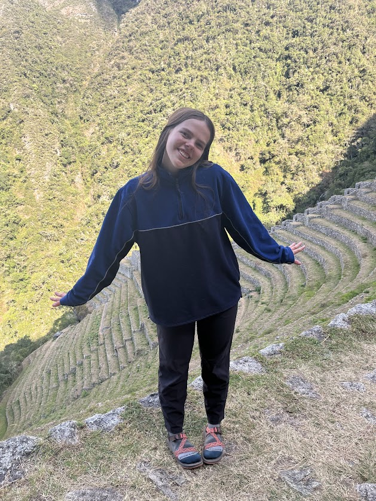

The Inspiration
The idea for the ‘Remember Your Day’ website came from a talk from an Apostle of the Church of Jesus Christ of Latter-Day Saints, Elder Henry B. Eyring. He spoke on the importance of remembrance when it came to faith in Christ, and the role and importance it can play in familiar relationships. When he was a young father, he discovered the importance that journaling could play in his life and for his family and faith. He says, that one night,
“Although I was tired, I took out some paper and began to write. And as I did, I understood the message I had heard in my mind. I was supposed to record for my children to read, someday in the future, how I had seen the hand of God blessing our family … I wrote down a few lines every day for years. I never missed a day no matter how tired I was or how early I would have to start the next day. Before I would write, I would ponder this question: ‘Have I seen the hand of God reaching out to touch us or our children or our family today?’ As I kept at it, something began to happen. As I would cast my mind over the day, I would see evidence of what God had done for one of us that I had not recognized in the busy moments of the day. As that happened, and it happened often, I realized that trying to remember had allowed God to show me what He had done.”
Maybe sometimes, we are tired. We don’t feel like we have time to remember the day we lived. But when we think about our future, can we afford to forget it? Whether you want to grow closer to Christ, become more meaningful with the things you do, or create a record for your posterity, creating meaningful time to remember can change your life, as well as those to come. He later in the talk gives all of us an invitation;
“Tonight, and tomorrow night, you might pray and ponder, asking the questions: Did God send a message that was just for me? Did I see His hand in my life or the lives of my children? I will do that. And then I will find a way to preserve that memory for the day that I, and those that I love, will need to remember how much God loves us and how much we need Him.”
I add my personal testimony of the power of Remembrance. I know that God is in the intricate details of my life, and I can feel it every time I take a pen to paper and give Him a second to show me. Journaling has changed my life, and I hope this easy-to-manage platform can help you create a simple habit that can make your life a little bit more joyful and purposeful.
About Me

Hi! My name's Amber, and I love everything about life! I love trying new things! While serving as a missionary for the Church of Jesus Christ in Peru, I tested my limits by exploring and adapting to a whole new culture! Whether abroad or in the same small town, everyone has a story! During my mission I developed the habit of writitng in my journal every day. Now that I'm a college student, it's hard to find the time. Between every assignment, shift at work, and sliver of a social life, I found it difficult to continue my beloved hobby! That's when I was inspired (by this talk) to write a short sentance of my day on my calendar. I might not have a full 30 minutes, but I definitely have 10 seconds. Whether you want to create big Journal entries, or only a sentance or two, this application is for you! It's time to remember you day, and write your story, one day at a time!